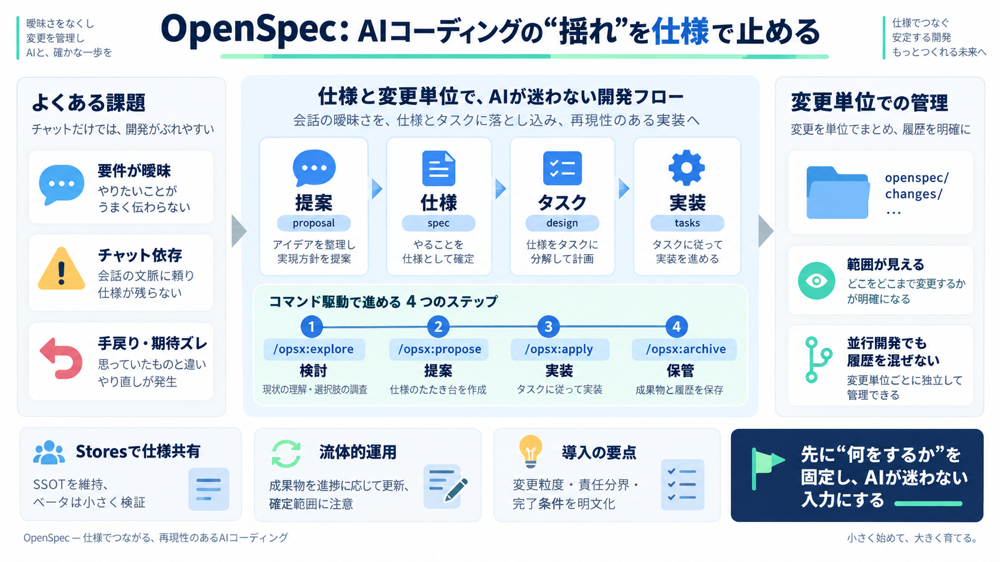

GitHub - Fission-AI/OpenSpec: Spec-driven development (SDD) for ...
Agree before you build — human and AI align on specs before code gets written Stay organized — each change gets its own…

OpenSpecは、AIコーディングを「チャットの文脈」から「仕様（spec）と変更単位（change）」へ移し、実装前の合意形成と再現性を高めます。
AIは速い一方、要件が曖昧なまま進むと手戻りが増え、チームの期待のズレも大きくなります。
OpenSpecは、アイデアを提案し、proposal/spec/design/tasksを生成してから実装へ進むことで、「何をするか」を先に固定します。
検討→提案→実装→アーカイブをコマンドで分け、意図を段階的にロックします。
提案すると、対応するドキュメントとディレクトリが自動生成され、準備されたチェックリストに沿って実装が進みます。
成果物は openspec/changes/... のようにまとまって保存され、並行機能があっても変更範囲を追跡しやすくします。
単一リポジトリで閉じず、Stores（別リポジトリに計画を格納）で要件を共有し、仕様の同期崩れを抑えます。
OpenSpecの主眼は、AIが実装する前提で「仕様を成果物として構造化」し、チャット指示の曖昧さを減らす点です。
ウォーターフォールのように厳格なフェーズゲートを固定せず、成果物（proposal/spec/design/tasks）を進捗に応じて更新できる方針です。
ホスト要件を含む悪意あるリポジトリ入力に対してCLIを強化し、安全なアーカイブに関する更新にも触れられています。
OpenSpecは、提案→仕様→タスク→実装→アーカイブを可視化してズレを減らせる一方、ドキュメント整備と運用定着のコストが発生します。
導入時は、変更の粒度、更新の責任分界、そして何をもって完了（品質指標）にするかをチームで明文化すると効果が出やすくなります。
Agree before you build — human and AI align on specs before code gets written Stay organized — each change gets its own…
OpenSpec writes delta specs that show only what’s changed, with markers such as ADDED, MODIFIED, and REMOVED, and then m…
You can also use: ``` npx -y @fission-ai/openspec@latest init . --tools all npx -y @fission-ai/openspec@latest init . …
The difference isn’t cosmetic. It determines how much overhead your team absorbs per feature, how much context your agen…
OpenSpec by Fission AI is simplifying spec-driven development with just three commands that also dramatically reduce tok…